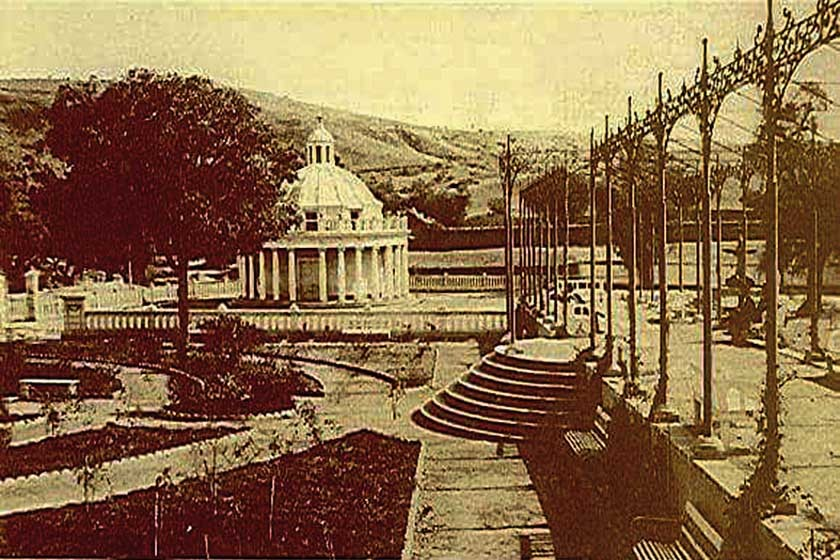
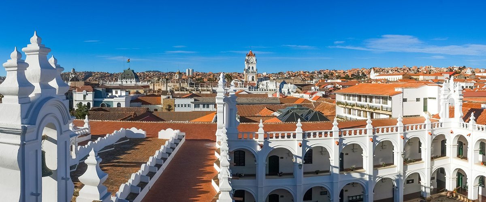
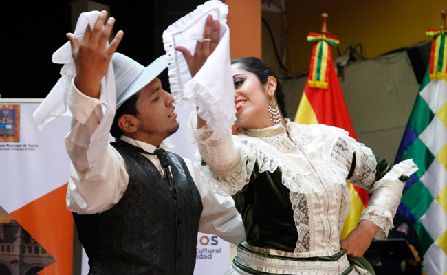
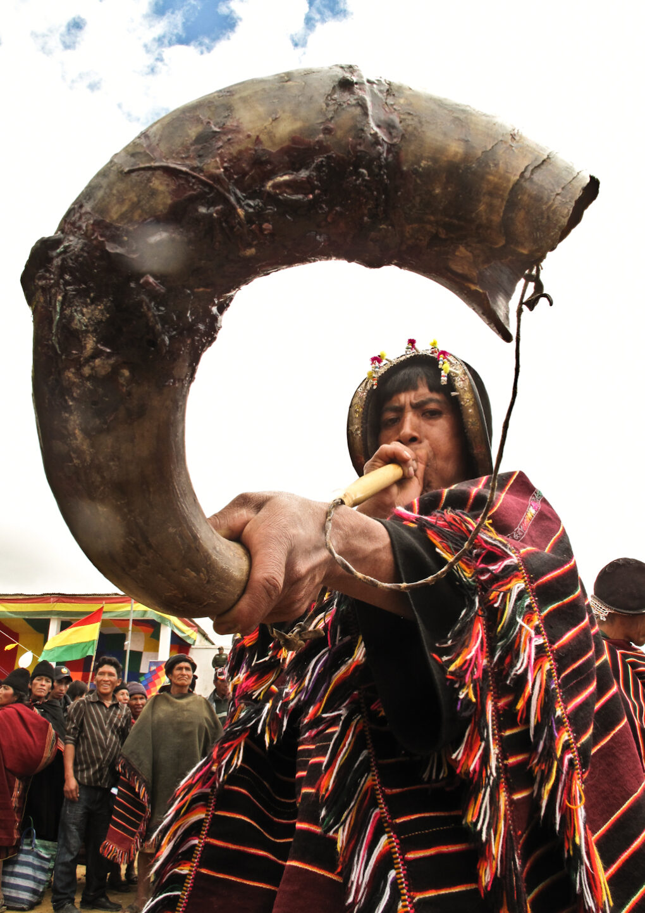
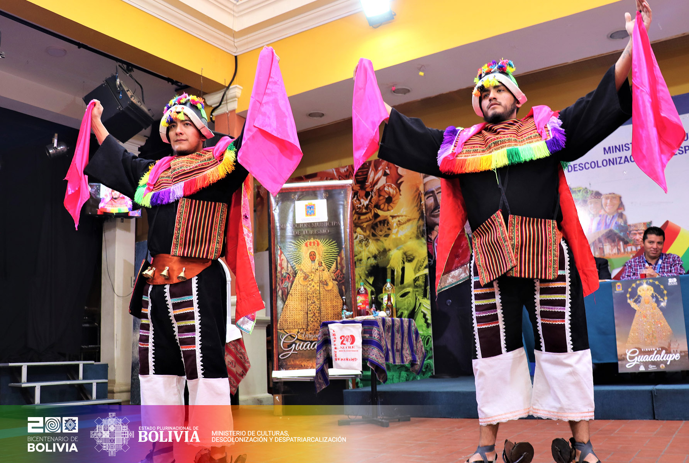
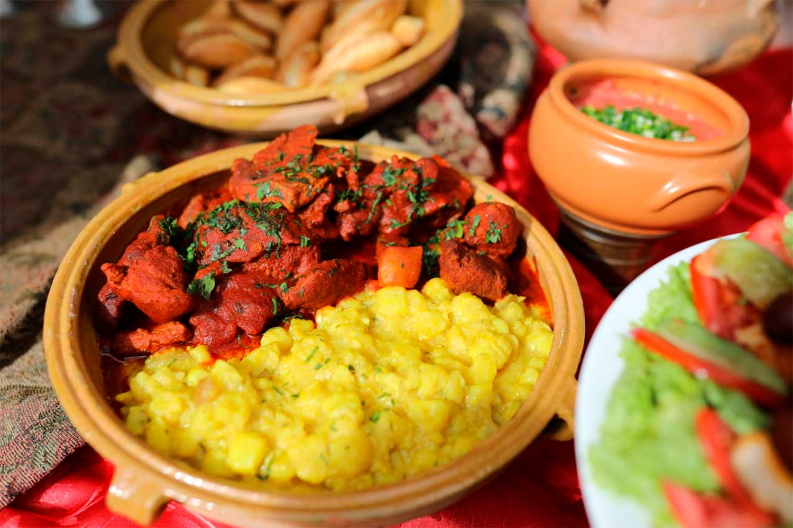
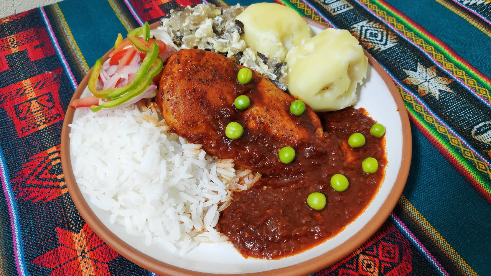
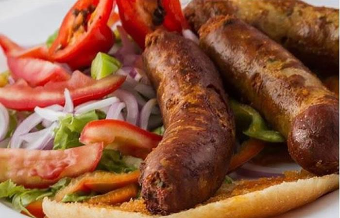
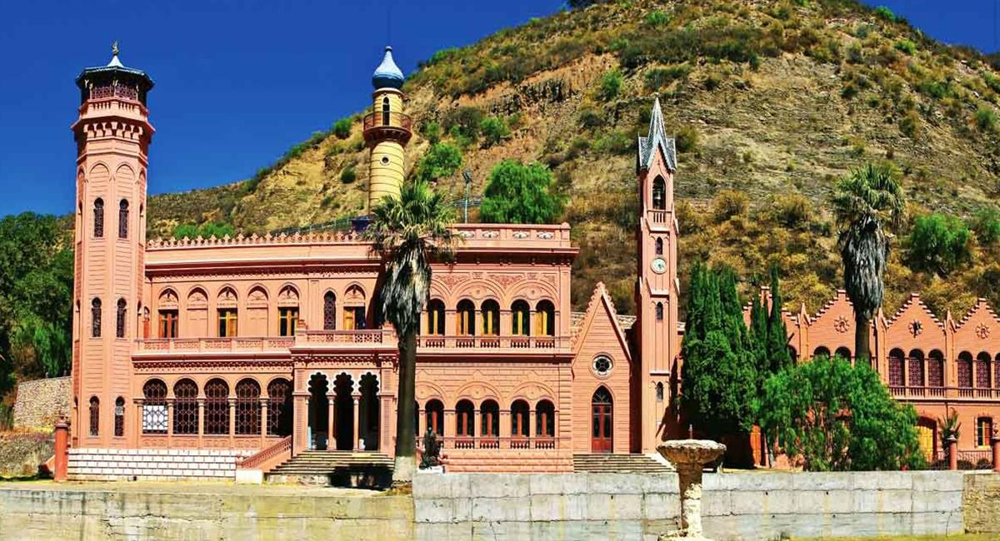
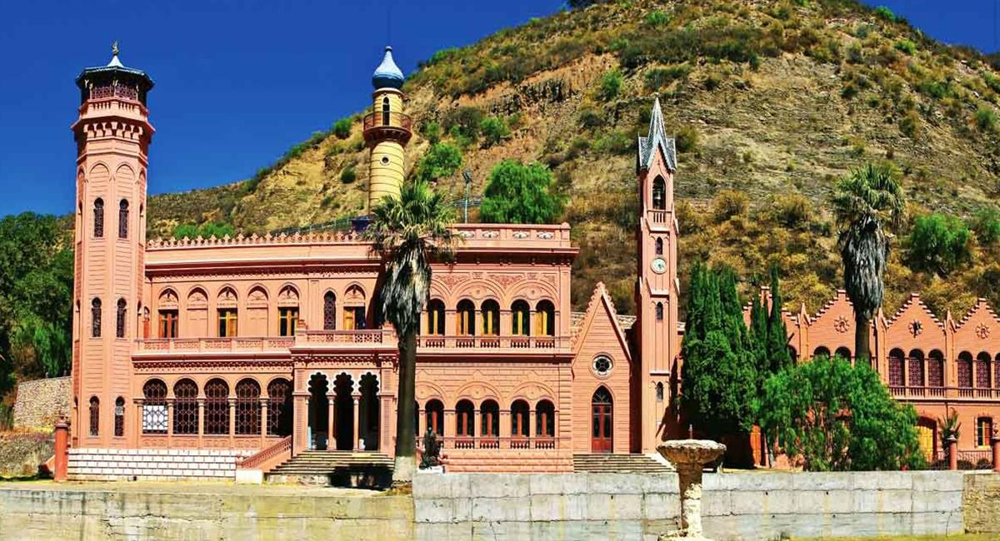

Ciudad de Sucre
Más sobre Sucre
Sucre es una ciudad con una rica historia y una belleza arquitectónica impresionante. Es la capital constitucional de Bolivia y se encuentra en el departamento de Chuquisaca.
-
Historia
Fundada el 29 de septiembre de 1538, Sucre fue la primera capital de Bolivia. Conocida como la "Ciudad Blanca" por sus edificios coloniales de color blanco, ha sido testigo de muchos eventos históricos importantes, incluyendo la Revolución de Chuquisaca en 1809.
-
Arquitectura
Sucre es famosa por su arquitectura colonial bien preservada. La Catedral Metropolitana, la Casa de la Libertad y el Monasterio de San Felipe Neri son solo algunos ejemplos de su patrimonio arquitectónico.
-
Cultura
  La ciudad de Sucre es un centro cultural vibrante. Alberga numerosos museos, como el Museo de Arte Indígena y el Museo de la Recoleta. Además, es sede de festivales tradicionales, como la Fiesta de la Virgen de Guadalupe.
-
Gastronomía
  La gastronomía en Sucre es diversa y deliciosa. Platos como el mondongo, los chorizos chuquisaqueños y las salteñas son algunas de las delicias que se pueden disfrutar en esta ciudad.
-
Turismo
 

Sucre es un destino turístico popular por su clima agradable y su riqueza histórica. Los visitantes pueden explorar el Parque Cretácico, la Plaza 25 de Mayo y muchos otros lugares de interés.